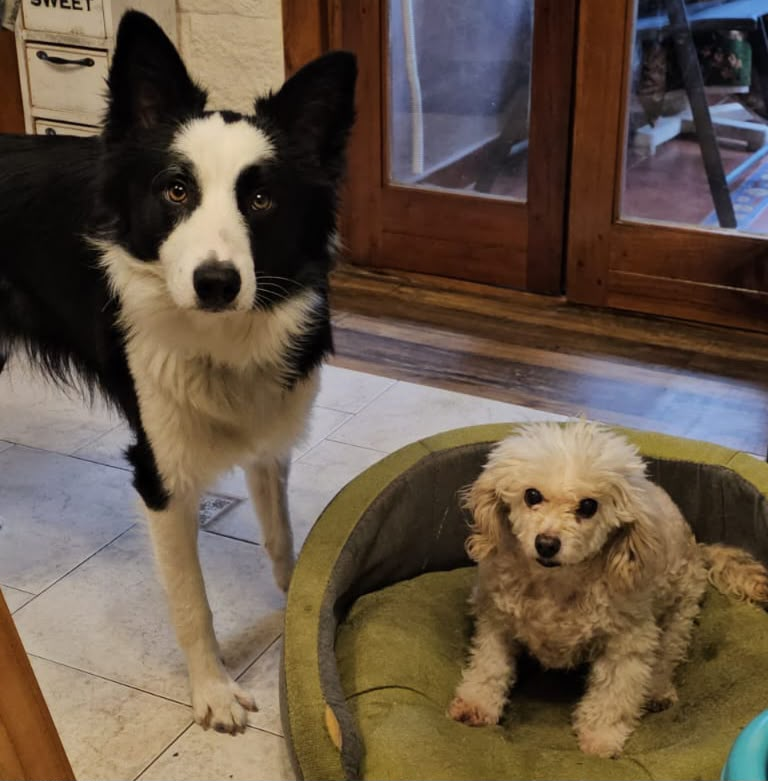
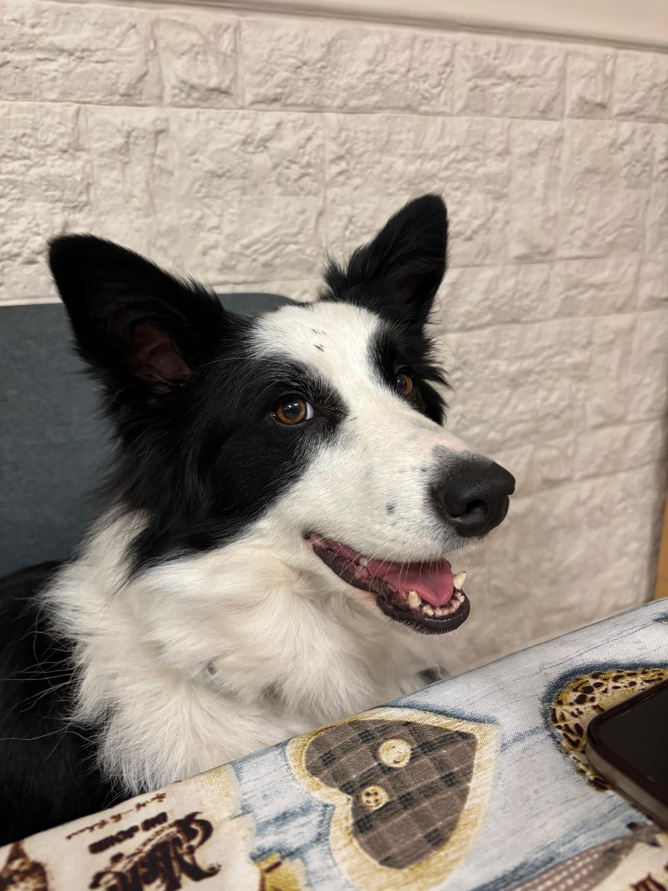
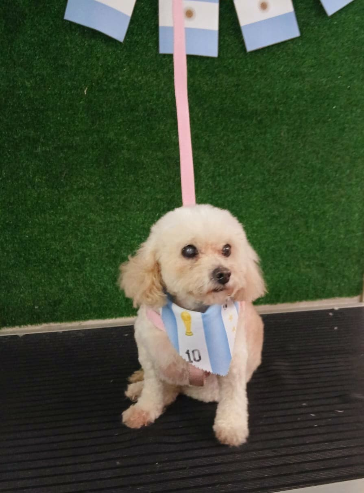

Kafka
Gato mestizo · 7 añosDormilón profesional, independiente y de ronquidos sonoros. Es el compañero fiel que me acompañó en la mudanza.
Ver ficha de KafkaEstudiante: Adri Bergantino | Materia: Diseño y Desarrollo Web
Esta galería visual presenta a los tres integrantes de cuatro patas que forman parte fundamental de nuestro día a día: Kafka, Flash y Alma. Cada uno posee una personalidad única, historias de rescate y superación, y un lugar irremplazable en el hogar.

Haz clic en el botón de cada tarjeta para acceder a su ficha detallada, historia y fotos:
Dormilón profesional, independiente y de ronquidos sonoros. Es el compañero fiel que me acompañó en la mudanza.
Ver ficha de Kafka
Pura energía y demandante de paseos matutinos. Un valiente sobreviviente de moquillo que llena la casa de vitalidad.
Ver ficha de Flash
Nuestra compañera más veterana. En su etapa senior disfruta de jornadas tranquilas y todo el cuidado que merece.
Ver ficha de Alma